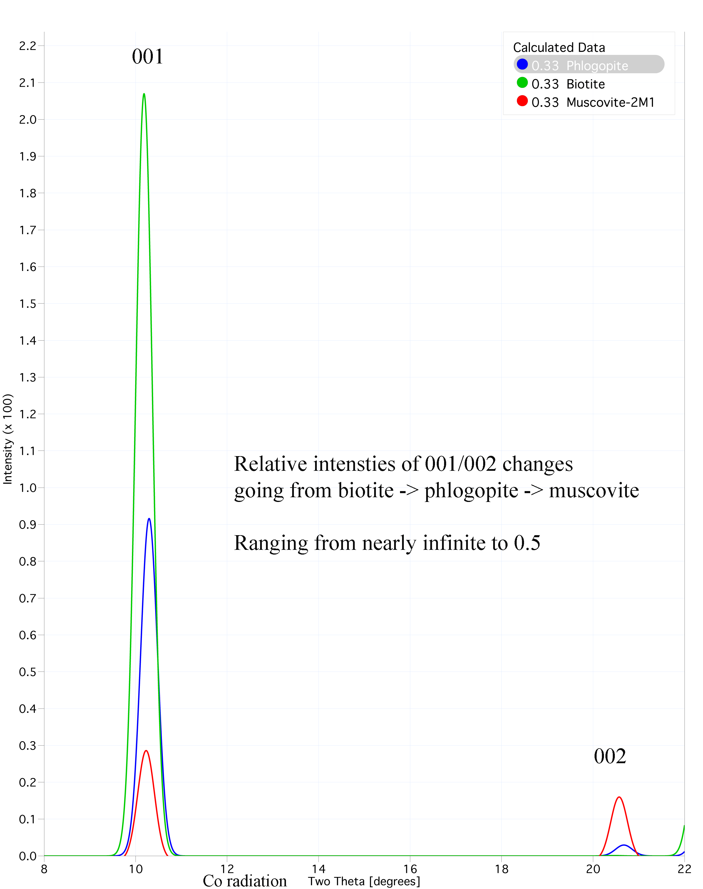
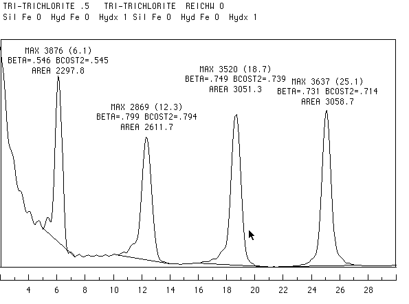

Moore and
Reynolds, 146-148
Brindley and Brown, pages 46-80
Newman, pages 22-128
Biotite - KMg2FeAlSi3O10(OH)2
Annite - KFe2MgAlSi3O10(OH)2 : Not shown
Properties: Flexible and elastic
Phengite - K Al
1.5Mg0.5Al0.5Si3.5 O10 (OH)2
Celadonite - K
(Mg,Fe2+)Al Si4 O10 (OH)2
Distinguishing Di- from Trioctahedral
structures can be accomplished in several ways. Distortion of the
octahedral sheet related to vacancies in the dioctahedral
structure cause a shortening of the b lattice dimension. In the case of triocthedral
sheets, where all sites are occupied, the b lattice dimension increases (and more so as
the octahedral cations become larger). This is manifested in the
(060) reflection as seen in the diffraction patterns below.

The increase in symmetry afforded by triocthedral structures also has an effect of phase shifting the X-rays in a way that decreases the intensity of the (002) reflections. The diffraction pattern below demonstrates decrease in the (002) reflection of trioctahedral structures. Ratios of odd:even (00l) reflections make excellent indices for di- versus trioctahedral content, in addition to the positions of the (060).

Other analytical methods can also be
used to distinguish octahedral and tetrahedral content and
structure.
Here are some papers (and references
therein) that discuss other techniques:
Schroeder, P.A. 1993
A chemical, XRD and 27Al NMR investigation of Miocene
Gulf Coast shales with application
to understanding illite/smectite crystal chemistry: Clays and Clay Minerals,
v. 41(6). 668-679.
Schroeder, P.A. and Pruett, R.
1996
Iron ordering in kaolinites: Insights from 29Si and 27Al NMR
spectroscopy. American
Mineralogist, v. 81, 26-38.
Schroeder,
P.A.,
Pruett, R.J., and Hurst, V.J., 1998
Effects of secondary iron phases on kaolinite 27Al MAS NMR
spectra: Clays and Clay
Minerals, v. 46(4), 429-435.
2:1 Brittle
micas X~2
Clintonite
- Ca Mg 2 Al SiAl3O10(OH) 2 Trioctahedral


Chamosite (Fe-chlorite) rosettes from subsurface Norphlet formation, Alabama. The scanning electron micrograph is about 5 µm accross.
Below is an XRD pattern of the clay fraction of a Triassic
sandstone (Dora J. Truluck #1 South
Carolina Upper Triassic). It contains quartz, illite,
albite, and a chlorite group mineral. It is hypothesized that
the chlorite mineral is sudoite. Here is a bibliography of sudoite research.
{kind=link}